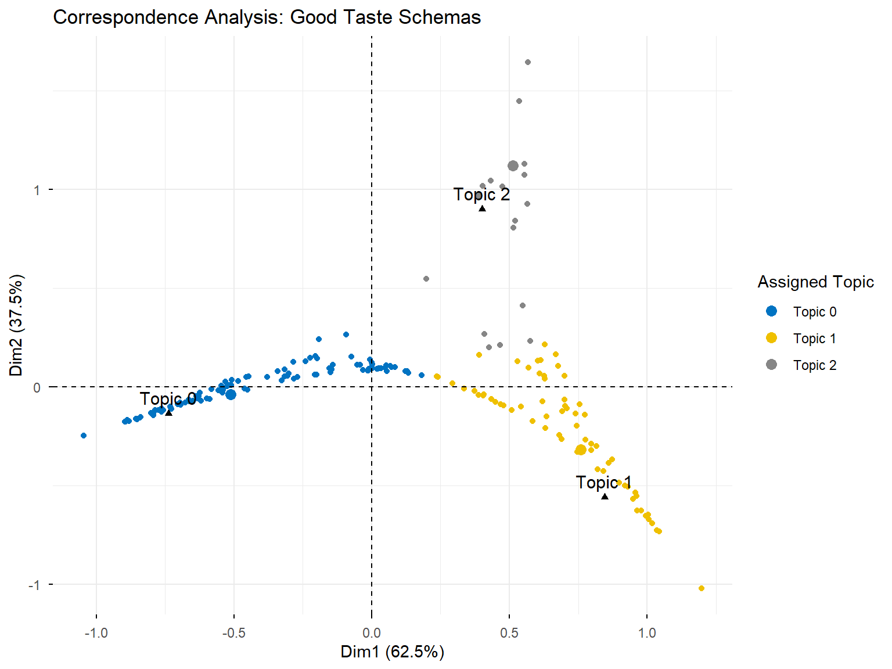
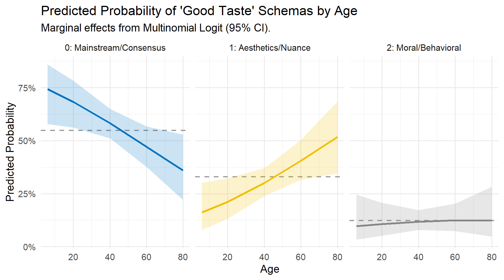
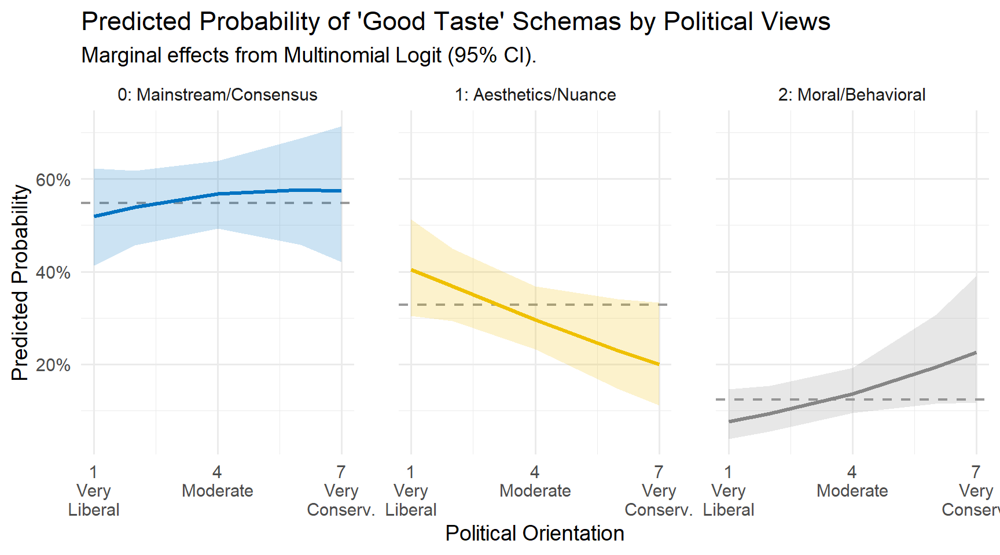
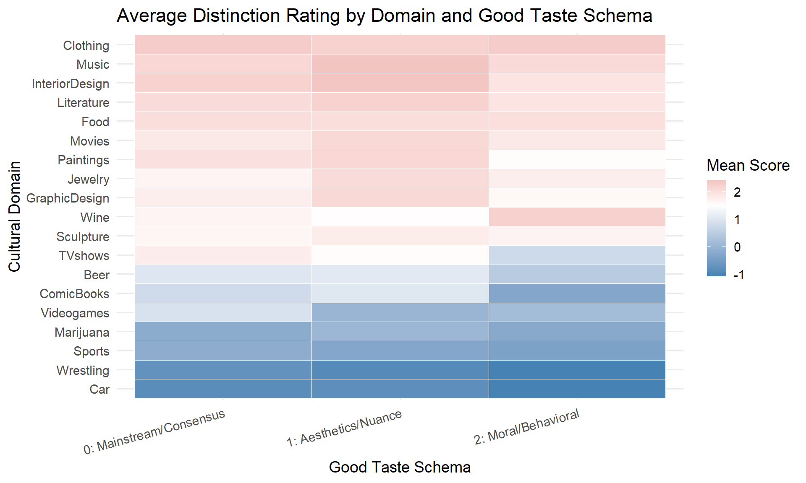

Topic Modeling for ‘Good Taste’ and ‘Bad Taste’ Definitions
Note
This report was generated using AI under general human direction. At the time of generation, the contents have not been comprehensively reviewed by a human analyst.
Introduction
This report uses BERTopic to extract topics from open-ended survey responses defining what constitutes “Good Taste” and “Bad Taste”. The BERTopic models were trained in Python and the results saved to disk. We visualize the distributions of topics below using the tidyverse and ggplot2.
Setup and data loading
We load the necessary R packages and load our summarized topic data.
library(dplyr)
Attaching package: 'dplyr'
The following objects are masked from 'package:stats':
filter, lag
The following objects are masked from 'package:base':
intersect, setdiff, setequal, union
During the preprocessing phase of the BERTopic pipeline, a custom stop-word list was applied. In addition to standard English stop words (like “the”, “to”, and “and”), domain-specific survey terms such as “good”, “bad”, “taste”, “people”, “person”, “think”, “means”, “just”, “like”, “things”, and “someone” were removed. This prevents generic survey phrasing from dominating the extracted topics and allows more substantive themes to emerge.
The short texts defining “Good Taste” and “Bad Taste” were clustered into 3 broad themes each using BERTopic. We load the summarized results from those models.
# Load the pre-computed topic info tablesgood_topic_info <-read_csv("../good_taste_model_min10/topic_info.csv", show_col_types =FALSE)bad_topic_info <-read_csv("../bad_taste_model_min15/topic_info.csv", show_col_types =FALSE)# Clean up the Python list formatting in the Representation columnclean_keywords <-function(rep_str) {str_remove_all(rep_str, "\\[|\\]|'")}good_topic_info$Keywords <-sapply(good_topic_info$Representation, clean_keywords)bad_topic_info$Keywords <-sapply(bad_topic_info$Representation, clean_keywords)# Remove the messy Representation and NaN Representative_Docs columns for the tablegood_topic_table <- good_topic_info %>%select(Topic, Count, Name, Keywords)bad_topic_table <- bad_topic_info %>%select(Topic, Count, Name, Keywords)# Ensure Tabs directory exists and save the tables as HTMLdir.create("Tabs", showWarnings =FALSE)# Write out simple HTML tableswriteLines( knitr::kable(good_topic_table, format ="html"), "Tabs/good_taste_summary_table.html")writeLines( knitr::kable(bad_topic_table, format ="html"), "Tabs/bad_taste_summary_table.html")head(good_topic_info, 10)
To ensure that the number of topics discovered by our primary model was not overly sensitive to the parameter choice of minimum cluster size (min_topic_size), we ran a robustness check across a range of values (5, 10, 15, and 20).
robustness <-fromJSON("../topic_robustness_summary.json")good_df <- robustness$good_taste_robustness %>%mutate(Model ="Good Taste")bad_df <- robustness$bad_taste_robustness %>%mutate(Model ="Bad Taste")robust_df <-bind_rows(good_df, bad_df)p_robust <-ggplot(robust_df, aes(x = min_topic_size, y = num_topics, color = Model, group = Model)) +geom_line(linewidth =1.2) +geom_point(size =3) +theme_minimal(base_size =14) +scale_color_manual(values =c("Good Taste"="steelblue", "Bad Taste"="indianred")) +scale_y_continuous(breaks =seq(0, 10, by =1)) +labs(title ="Sensitivity to Minimum Topic Size",x ="Minimum Topic Size Parameter",y ="Number of Discovered Topics (Excl. Outliers)" )print(p_robust)
Good Taste: The structure of “Good Taste” definitions is remarkably stable. It naturally partitions into 3 distinct themes at lower minimum sizes, before collapsing into a broader binary distinction (2 topics) at higher thresholds. We recommend sticking with 3 topics to preserve the nuance between differing “good taste” schemas without overfitting.
Bad Taste: Definitions of “Bad Taste” are more fragmented. At min_topic_size = 5, the algorithm finds 8 granular topics, some of which may be micro-clusters. However, forcing the minimum size to 20 collapses the nuance entirely into just 2 topics. A min_topic_size = 10 (yielding 6 topics) or min_topic_size = 15 (yielding 3 topics) offers the best balance. For comparability with the Good Taste results, utilizing the 3 topic solution (min_topic_size = 15) is highly recommended, as it likely captures the core folk schemas of bad taste (e.g., gaudiness, lack of independence, and mass-media consumption) without excessive fragmentation.
Visualizing topic distributions
We use ggplot2 to visualize the distribution and prominence of each theme.
(Note: Topic -1 in BERTopic refers to outliers that could not be confidently assigned to a cluster. We exclude it from the visualizations below.)
# Ensure Plots directory existsdir.create("Plots", showWarnings =FALSE)# Good Taste Topic Frequenciesp_good <-ggplot(good_topic_info %>%filter(Topic !=-1), aes(x =reorder(Name, Count), y = Count)) +geom_bar(stat ="identity", fill ="steelblue") +coord_flip() +theme_minimal(base_size =14) +labs(title ="Good Taste: Topic Frequencies", x ="Topic Name (Top Words)", y ="Number of Responses" )print(p_good)
ggsave("Plots/good_taste_topics.png", plot = p_good, width =8, height =6)# Bad Taste Topic Frequenciesp_bad <-ggplot(bad_topic_info %>%filter(Topic !=-1), aes(x =reorder(Name, Count), y = Count)) +geom_bar(stat ="identity", fill ="indianred") +coord_flip() +theme_minimal(base_size =14) +labs(title ="Bad Taste: Topic Frequencies", x ="Topic Name (Top Words)", y ="Number of Responses" )print(p_bad)
To better understand why each topic was formed, we can look at the mathematical importance (c-TF-IDF score) of the top keywords for each topic. We extract these weights directly from the saved model metadata.
Interpretation
Based on our updated 3-topic solution:
Good Taste schemas split broadly into aligning with mainstream/external consensus (Topic 0), an appreciation for aesthetic nuances like writing style, colors, and subtle art (Topic 1), and a moral or behavioral aspect such as making “good choices” or avoiding offense (Topic 2).
Bad Taste schemas are similarly split into viewing bad taste simply as a divergence from one’s personal preferences (Topic 0), engaging with low-quality, offensive, or “weird” mass media/material goods (Topic 1), and possessing a sense of humor or aesthetic that is loud, sophomoric, and lacking an understanding of desirable qualities (Topic 2).
# Function to parse the topics.json file into a ggplot-friendly dataframeextract_keyword_weights <-function(json_path) {# Read from root path because the Quarto file runs from the report/ dir# but the string provided was relative to root in my tests. topics_data <-fromJSON(json_path)$topic_representations# Remove the outlier topic "-1" topics_data[["-1"]] <-NULL# Convert nested list into a dataframe df_list <-lapply(names(topics_data), function(topic_id) {# Each item is a matrix/array where [,1] is the word and [,2] is the score mat <- topics_data[[topic_id]]data.frame(Topic =paste("Topic", topic_id),Word =as.character(mat[,1]),Score =as.numeric(mat[,2]),stringsAsFactors =FALSE ) })do.call(rbind, df_list)}# Extract for Good Tastegood_weights <-extract_keyword_weights("../good_taste_model_min10/topics.json")# Plot Good Taste Keywordsp_good_keys <- good_weights %>%group_by(Topic) %>%top_n(8, Score) %>%# Get top 8 words per topicungroup() %>%mutate(Word =reorder_within(Word, Score, Topic)) %>%ggplot(aes(x = Word, y = Score, fill = Topic)) +geom_col(show.legend =FALSE) +facet_wrap(~ Topic, scales ="free_y") +coord_flip() +scale_x_reordered() +theme_minimal() +labs(title ="Good Taste: Keyword Importance by Topic",x =NULL, y ="c-TF-IDF Score" )print(p_good_keys)
ggsave("Plots/good_taste_keywords.png", plot = p_good_keys, width =10, height =8)# Extract for Bad Tastebad_weights <-extract_keyword_weights("../bad_taste_model_min15/topics.json")# Plot Bad Taste Keywordsp_bad_keys <- bad_weights %>%group_by(Topic) %>%top_n(8, Score) %>%ungroup() %>%mutate(Word =reorder_within(Word, Score, Topic)) %>%ggplot(aes(x = Word, y = Score, fill = Topic)) +geom_col(show.legend =FALSE) +facet_wrap(~ Topic, scales ="free_y") +coord_flip() +scale_x_reordered() +theme_minimal() +labs(title ="Bad Taste: Keyword Importance by Topic",x =NULL, y ="c-TF-IDF Score" )print(p_bad_keys)
Instead of relying solely on keyword matching, we can leverage the document-by-topic probability matrices exported by the models to find the texts that are mathematically the most representative of each topic.
# Load the original survey textraw_data <-read_csv("../data/FolkTaste_CleanData.csv", show_col_types =FALSE)valid_data <- raw_data %>%filter(Taste_Possibility =='YES')good_docs <- valid_data$GoodTaste_Def[!is.na(valid_data$GoodTaste_Def)]bad_docs <- valid_data$BadTaste_Def[!is.na(valid_data$BadTaste_Def)]# Load probability matricesgood_probs <-read_csv("../good_taste_model_min10/document_topic_probabilities.csv", show_col_types =FALSE)bad_probs <-read_csv("../bad_taste_model_min15/document_topic_probabilities.csv", show_col_types =FALSE)# Function to get top documents based on probability scoreget_top_docs <-function(docs, prob_matrix, topic_col, n =2) {# topic_col is the column name in the probability matrix (e.g. "0", "1")if(!as.character(topic_col) %in%colnames(prob_matrix)) return("N/A") probs <- prob_matrix[[as.character(topic_col)]] top_idx <-order(probs, decreasing =TRUE)[1:n]paste(paste0("• <em>\"", docs[top_idx], "\"</em>"), collapse ="<br><br>")}# Apply to Good Tastegood_topic_table$Example_Responses <-sapply(good_topic_table$Topic, function(t) {if(t ==-1) return("Outliers")get_top_docs(good_docs, good_probs, t, n =2)})# Apply to Bad Tastebad_topic_table$Example_Responses <-sapply(bad_topic_table$Topic, function(t) {if(t ==-1) return("Outliers")get_top_docs(bad_docs, bad_probs, t, n =2)})# Save the updated tables to the Tabs directorywriteLines( knitr::kable(good_topic_table, format ="html", escape =FALSE), "Tabs/good_taste_examples_table.html")writeLines( knitr::kable(bad_topic_table, format ="html", escape =FALSE), "Tabs/bad_taste_examples_table.html")
Good Taste Examples
Topic
Name
Example_Responses
-1
-1_fashion_trendy_style_appreciate
Outliers
0
0_say_mean_usually_subjective
• "I think that a person who has good taste can easily influence a lot of people. I also think that they are very smart in knowing what their audience want. They follow modern trends and study the good and bad."
• "Usually, when someone has good taste I consider their likes/dislikes to be similar to mine, because I believe that I have good taste."
1
1_art_appreciate_choices_shows
• "This person can distinguish good art from bad art. This person has seen and learned a lot in this professional area."
• "As elitist as it may sound, I've associated someone having good taste as someone rather cultured. Their preferences are somewhat subdued, and with a sense of cohesiveness. It's not loud, garish, or pretentious."
2
2_interact_services_selection_look
• "I think that they make good, stylish choices based on the type of aesthetic that I myself appreciate. They also think in creative ways that complement their choices as a whole."
• "The have knowledge and range in the music they prefer"
Bad Taste Examples
Topic
Name
Example_Responses
-1
-1_quality_poor_dont_art
Outliers
0
0_say_dont_likes_example
• "A person has bad taste when they don't follow current trends. They are unable to think outside the box and refuse to see things from different points of view. They get stuck in one thing and end up getting left behind."
• "If majority of people think what they think is good is bad then it usually means they have bad taste compared to everyone."
1
1_dont_choices_care_make
• "Bad taste is noted when others do not approve of someone's choices or biases on a particular topic. It could mean that they are behind on following trends, or it could mean that they fail to see the depth or true value in the aforementioned topic and have shallow judgement."
• "Someone who watches conspiracy theory shows and drama based reality TV about people’s personal lives. Ancient Aliens and similar shows acively try to mislead people. Shows like Honey Boo Boo and similar just encourage drama amongst the people involved."
2
2_loud_sense_colors_shows
• "I'd say someone with a "bad taste" doesn't really like things on their own, they tend to be a follower for what's popular so they don't end up with much of a taste at all. I'd also say it's when they like a lot of things that other people tend to dislike, so they'd have a "bad taste" compared. Again though, really depends on cultures and areas they grew up, what may be bad tastes where they are, could be good tastes elsewhere."
• "Someone who behaves with vulgarity, or who likes cheap furniture or art."
Correspondence Analysis of Topic Probabilities
Because each open-ended response is a mixture of the discovered topics, we can visualize the document-by-topic probability matrices using Correspondence Analysis (CA).
The resulting biplots project the document probabilities into a 2D space. The black triangles represent the “pure” topics, and the colored dots represent the individual respondents’ definitions. Documents that fall halfway between two topics combine themes from both, while documents clustered tightly at the vertices represent “pure” definitions of that specific schema. We have colored each document by its dominant assigned topic.
Interpretation of CA Biplots
The structural relationships revealed by the Correspondence Analysis are highly informative:
Clear Differentiation: The documents tend to stretch distinctly toward the three vertices (topics), indicating that while there is some blending, most respondents lean heavily toward one primary schema for defining “Good” or “Bad” taste.
Good Taste Schema Distance: In the Good Taste biplot, Topic 0 (mainstream consensus) and Topic 1 (aesthetic/high-art nuance) stretch out horizontally across Dimension 1. Topic 2 (moral/behavioral aspects) projects upward along Dimension 2, indicating that the moralized version of “Good Taste” is orthognal to the aesthetic/consensus debate.
Bad Taste Schema Distance: In the Bad Taste biplot, a similar structure often emerges, highlighting the tension between defining bad taste merely as a disagreement in preference versus defining it as objectively low-quality or socially offensive behavior.
library(FactoMineR)library(factoextra)# Clean up column names for plottingcolnames(good_probs) <-paste("Topic", 0:(ncol(good_probs)-1))colnames(bad_probs) <-paste("Topic", 0:(ncol(bad_probs)-1))# Add a tiny constant to avoid zero-division in CAgood_ca_data <- good_probs +1e-6bad_ca_data <- bad_probs +1e-6# Determine dominant topic for coloringgood_assigned <-as.factor(paste("Topic", apply(good_probs, 1, which.max) -1))bad_assigned <-as.factor(paste("Topic", apply(bad_probs, 1, which.max) -1))# Perform Correspondence Analysisres.ca.good <-CA(good_ca_data, graph =FALSE)res.ca.bad <-CA(bad_ca_data, graph =FALSE)# Visualize Good Taste CAp_ca_good <-fviz_ca_biplot(res.ca.good, geom.row ="point", col.row = good_assigned,col.col ="black", title ="Correspondence Analysis: Good Taste Schemas",palette ="jco",legend.title ="Assigned Topic")print(p_ca_good)

ggsave("Plots/ca_good_taste.png", plot = p_ca_good, width =8, height =6)# Visualize Bad Taste CAp_ca_bad <-fviz_ca_biplot(res.ca.bad, geom.row ="point", col.row = bad_assigned,col.col ="black", title ="Correspondence Analysis: Bad Taste Schemas",palette ="jco",legend.title ="Assigned Topic")print(p_ca_bad)
Extended Analysis: Demographics, Schema Correlation, and Distinction
By attaching the latent topic assignments back to the original survey respondents, we can perform downstream statistical analyses. For the following tests, we assign each respondent to the topic for which they have the highest probability.
# Re-read raw data and align exactly with the probability matricesraw_survey <-read_csv("../data/FolkTaste_CleanData.csv", show_col_types =FALSE)survey_df <- raw_survey[-1, ] # drop question rowvalid_idx <-which(!is.na(survey_df$GoodTaste_Def))analysis_df <- survey_df[valid_idx, ]# Assign hard clusters based on max probabilityanalysis_df$GoodTopic_Id <-apply(good_probs, 1, which.max) -1analysis_df$BadTopic_Id <-apply(bad_probs, 1, which.max) -1# Provide descriptive labelsgood_labels <-c("0: Mainstream/Consensus", "1: Aesthetics/Nuance", "2: Moral/Behavioral")bad_labels <-c("0: Personal Disagreement", "1: Low Quality/Materialist", "2: Loud/Sophomoric/Offensive")analysis_df$GoodTasteTopic <-factor(analysis_df$GoodTopic_Id, labels = good_labels)analysis_df$BadTasteTopic <-factor(analysis_df$BadTopic_Id, labels = bad_labels)# Clean demographicsanalysis_df$Age <-as.numeric(analysis_df$Age)analysis_df$EducationLevel_Coded <-as.numeric(analysis_df$EducationLevel_Coded)analysis_df$Political <-as.numeric(analysis_df$Political)
1. Demographics vs. Taste Schemas
Do different kinds of people hold different definitions of taste? We can examine the relationship between our discovered schemas and respondent demographics (Age, Gender, Education, and Political views) using Multinomial Logistic Regression.
library(nnet)library(car)library(effects)library(ggsci)library(tidyr)# Filter for clean data on predictorsmodel_data <- analysis_df %>%filter(!is.na(Age), !is.na(EducationLevel_Coded), !is.na(Political), Gender %in%c("A man", "A woman"))# Fit multinomial models (Hess=TRUE is required for standard errors in effects package)m_good <-multinom(GoodTasteTopic ~ Age + Gender + EducationLevel_Coded + Political, data = model_data, Hess =TRUE, trace =FALSE)m_bad <-multinom(BadTasteTopic ~ Age + Gender + EducationLevel_Coded + Political, data = model_data, Hess =TRUE, trace =FALSE)# Run Wald testswald_good <- car::Anova(m_good, type ="II", test.statistic ="Wald")wald_bad <- car::Anova(m_bad, type ="II", test.statistic ="Wald")# Calculate base probabilities for the dashed linesbaseline_good <- model_data %>%count(GoodTasteTopic) %>%mutate(prop = n /sum(n), Topic = GoodTasteTopic)baseline_bad <- model_data %>%count(BadTasteTopic) %>%mutate(prop = n /sum(n), Topic = BadTasteTopic)# Extract predicted probabilities with confidence intervals for Age (significant predictor)eff_good_df <-as.data.frame(Effect("Age", m_good))names(eff_good_df) <-gsub("\\.X([0-2]).*", ".\\1", names(eff_good_df))plot_good_df <- eff_good_df %>%select(Age, starts_with("prob."), starts_with("L.prob."), starts_with("U.prob.")) %>%pivot_longer(cols =-Age,names_to =c(".value", "Topic"),names_pattern ="(.*)\\.(.*)" ) %>%mutate(Topic =factor(Topic, levels =c("0", "1", "2"), labels = good_labels))p_good_age <-ggplot(plot_good_df, aes(x = Age, y = prob, color = Topic, fill = Topic)) +geom_hline(data = baseline_good, aes(yintercept = prop), linetype ="dashed", color ="gray60", linewidth =0.8) +geom_ribbon(aes(ymin = L.prob, ymax = U.prob), alpha =0.2, color =NA) +geom_line(linewidth =1.2) +facet_wrap(~ Topic) +theme_minimal(base_size =14) +scale_color_jco() +scale_fill_jco() +scale_y_continuous(labels = scales::percent) +labs(title ="Predicted Probability of 'Good Taste' Schemas by Age",subtitle ="Marginal effects from Multinomial Logit (95% CI).",x ="Age", y ="Predicted Probability" ) +theme(legend.position ="none")print(p_good_age)

ggsave("Plots/demographics_good_taste_age.png", plot = p_good_age, width =9, height =5)# Extract predicted probabilities with confidence intervals for Political views (significant predictor)eff_good_pol_df <-as.data.frame(Effect("Political", m_good))names(eff_good_pol_df) <-gsub("\\.X([0-2]).*", ".\\1", names(eff_good_pol_df))plot_good_pol_df <- eff_good_pol_df %>%select(Political, starts_with("prob."), starts_with("L.prob."), starts_with("U.prob.")) %>%pivot_longer(cols =-Political,names_to =c(".value", "Topic"),names_pattern ="(.*)\\.(.*)" ) %>%mutate(Topic =factor(Topic, levels =c("0", "1", "2"), labels = good_labels))p_good_pol <-ggplot(plot_good_pol_df, aes(x = Political, y = prob, color = Topic, fill = Topic)) +geom_hline(data = baseline_good, aes(yintercept = prop), linetype ="dashed", color ="gray60", linewidth =0.8) +geom_ribbon(aes(ymin = L.prob, ymax = U.prob), alpha =0.2, color =NA) +geom_line(linewidth =1.2) +facet_wrap(~ Topic) +theme_minimal(base_size =14) +scale_color_jco() +scale_fill_jco() +scale_x_continuous(breaks =c(1, 4, 7), labels =c("1\nVery\nLiberal", "4\nModerate", "7\nVery\nConserv.")) +scale_y_continuous(labels = scales::percent) +labs(title ="Predicted Probability of 'Good Taste' Schemas by Political Views",subtitle ="Marginal effects from Multinomial Logit (95% CI).",x ="Political Orientation", y ="Predicted Probability" ) +theme(legend.position ="none",panel.spacing =unit(2, "lines") )print(p_good_pol)

ggsave("Plots/demographics_good_taste_political.png", plot = p_good_pol, width =9, height =5)# Bad Taste Age Plot (for visual reference, even if not significant)eff_bad_df <-as.data.frame(Effect("Age", m_bad))names(eff_bad_df) <-gsub("\\.X([0-2]).*", ".\\1", names(eff_bad_df))plot_bad_df <- eff_bad_df %>%select(Age, starts_with("prob."), starts_with("L.prob."), starts_with("U.prob.")) %>%pivot_longer(cols =-Age,names_to =c(".value", "Topic"),names_pattern ="(.*)\\.(.*)" ) %>%mutate(Topic =factor(Topic, levels =c("0", "1", "2"), labels = bad_labels))p_bad_age <-ggplot(plot_bad_df, aes(x = Age, y = prob, color = Topic, fill = Topic)) +geom_hline(data = baseline_bad, aes(yintercept = prop), linetype ="dashed", color ="gray60", linewidth =0.8) +geom_ribbon(aes(ymin = L.prob, ymax = U.prob), alpha =0.2, color =NA) +geom_line(linewidth =1.2) +facet_wrap(~ Topic) +theme_minimal(base_size =14) +scale_color_jco() +scale_fill_jco() +scale_y_continuous(labels = scales::percent) +labs(title ="Predicted Probability of 'Bad Taste' Schemas by Age",subtitle ="Marginal effects from Multinomial Logit (Not Statistically Significant).",x ="Age", y ="Predicted Probability" ) +theme(legend.position ="none")print(p_bad_age)
The Wald tests show that Age (p = 0.033) and Political views (p = 0.038) are significant predictors of which “Good Taste” schema a respondent holds. Neither are significantly associated with “Bad Taste” schemas.
Good Taste (Age): As respondents get older, they are less likely to define good taste purely as “Mainstream/Consensus” (Topic 0) and significantly more likely to define it through “Aesthetics/Nuance” (Topic 1).
Good Taste (Political Views): Political conservatism (measured from 1=Very Liberal to 7=Very Conservative) is strongly tied to how good taste is perceived. Liberals are much more likely to define it as “Aesthetics/Nuance” (Topic 1). As respondents become more conservative, the probability of holding this aesthetic view drops off, and they become highly likely to define good taste through a “Moral/Behavioral” lens (Topic 2; e.g., being respectful, not garish, interacting properly with others).
Bad Taste: Because the model is not statistically significant, any variation across age or political groups observed for Bad Taste schemas is likely due to sample noise rather than a population-level trend.
2. Correlation Between Good and Bad Taste Schemas
Because each respondent defined both “Good Taste” and “Bad Taste”, we can check if certain definitions naturally pair together in the population.
# Create a contingency tableschema_table <-table(analysis_df$BadTasteTopic, analysis_df$GoodTasteTopic)chisq_res <-chisq.test(schema_table)
Warning in chisq.test(schema_table): Chi-squared approximation may be incorrect
# Extract Pearson Residuals to visualizeresiduals_df <-as.data.frame(as.table(chisq_res$residuals))colnames(residuals_df) <-c("BadTaste", "GoodTaste", "Residual")# Re-label the factors for the plotlevels(residuals_df$GoodTaste) <- good_labelslevels(residuals_df$BadTaste) <- bad_labelsp_res <-ggplot(residuals_df, aes(x = GoodTaste, y = BadTaste, fill = Residual)) +geom_tile(color ="white") +geom_text(aes(label =round(Residual, 2)), color ="black", size =5) +scale_fill_gradient2(low ="indianred", mid ="white", high ="steelblue", midpoint =0) +theme_minimal(base_size =14) +theme(axis.text.x =element_text(angle =15, hjust =1)) +labs(title ="Pearson Residuals of Schema Correlation",subtitle ="Positive values (blue) indicate schema combinations that\noccur more often than expected by chance.",x ="Good Taste Schema",y ="Bad Taste Schema",fill ="Residual" )print(p_res)
A Chi-Squared test of independence confirms that the way a respondent defines Good Taste is highly predictive of how they define Bad Taste (\(\chi^2 = 52.78, p < .001\)). * Those who hold the “Mainstream/Consensus” view of Good Taste overwhelmingly view Bad Taste as a simple “Personal Disagreement.” * Those who view Good Taste as an appreciation for “Aesthetics/Nuance” tend to define Bad Taste specifically through the lens of “Low Quality/Materialist” goods.
3. Predicting Cultural Distinction Domains
Do these latent schemas actually correspond to how respondents draw boundaries in the real world? The survey asked respondents to rate various cultural domains (e.g., Music, Food, Clothing, TV Shows) on how effectively they act as markers of distinction (scale of -3 to +3).
We compute the average distinction score for each domain, grouped by the respondent’s Good Taste schema.
library(stringr)# Select distinction columnsdistinction_cols <-grep("Domains_Distinction1_", colnames(analysis_df), value =TRUE)# Calculate meansdistinction_means <- analysis_df %>%select(GoodTasteTopic, all_of(distinction_cols)) %>%pivot_longer(cols =starts_with("Domains_Distinction1_"), names_to ="Domain", values_to ="Score") %>%mutate(Domain =str_remove(Domain, "Domains_Distinction1_"),Score =as.numeric(Score) ) %>%filter(!is.na(Score)) %>%group_by(GoodTasteTopic, Domain) %>%summarize(Mean_Score =mean(Score, na.rm =TRUE), .groups ='drop')# Order domains by overall mean ratingdomain_order <- distinction_means %>%group_by(Domain) %>%summarize(Overall =mean(Mean_Score)) %>%arrange(Overall) %>%pull(Domain)distinction_means <- distinction_means %>%mutate(Domain =factor(Domain, levels = domain_order))# Plot as a heatmapp_dist <-ggplot(distinction_means, aes(x = GoodTasteTopic, y = Domain, fill = Mean_Score)) +geom_tile(color ="white") +scale_fill_gradient2(low ="steelblue", mid ="white", high ="indianred", midpoint =1.5) +theme_minimal(base_size =14) +theme(axis.text.x =element_text(angle =15, hjust =1)) +labs(title ="Average Distinction Rating by Domain and Good Taste Schema",x ="Good Taste Schema",y ="Cultural Domain",fill ="Mean Score" )print(p_dist)

ggsave("Plots/distinction_domains.png", plot = p_dist, width =10, height =6)# Calculate means for Bad Tastedistinction_means_bad <- analysis_df %>%select(BadTasteTopic, all_of(distinction_cols)) %>%pivot_longer(cols =starts_with("Domains_Distinction1_"), names_to ="Domain", values_to ="Score") %>%mutate(Domain =str_remove(Domain, "Domains_Distinction1_"),Score =as.numeric(Score) ) %>%filter(!is.na(Score)) %>%group_by(BadTasteTopic, Domain) %>%summarize(Mean_Score =mean(Score, na.rm =TRUE), .groups ='drop') %>%mutate(Domain =factor(Domain, levels = domain_order))# Plot Bad Taste Heatmapp_dist_bad <-ggplot(distinction_means_bad, aes(x = BadTasteTopic, y = Domain, fill = Mean_Score)) +geom_tile(color ="white") +scale_fill_gradient2(low ="steelblue", mid ="white", high ="indianred", midpoint =1.5) +theme_minimal(base_size =14) +theme(axis.text.x =element_text(angle =15, hjust =1)) +labs(title ="Average Distinction Rating by Domain and Bad Taste Schema",x ="Bad Taste Schema",y ="Cultural Domain",fill ="Mean Score" )print(p_dist_bad)
The heatmap reveals subtle variations in how different schema-holders apply cultural boundaries: * Across the board, domains like Music, Clothing, and Interior Design are considered strong markers of distinction. * Domains like Wrestling and Marijuana are generally not seen as effective markers of distinction. * Interestingly, respondents holding the “Aesthetics/Nuance” schema for Good Taste draw much harsher, more polarized boundaries—rating traditional high-art domains (like Literature and Paintings) notably higher than those holding the “Mainstream” or “Moral” schemas.